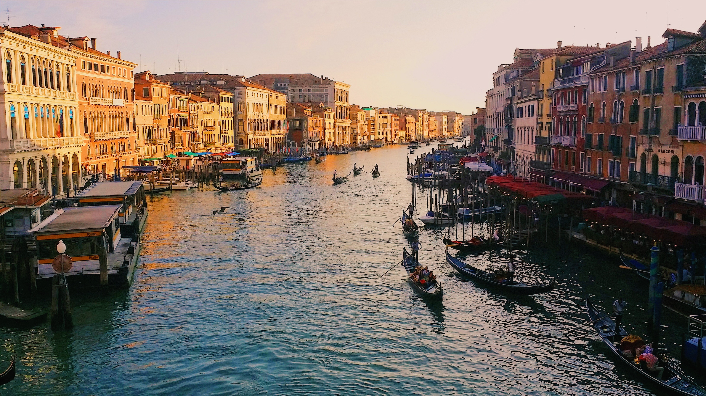
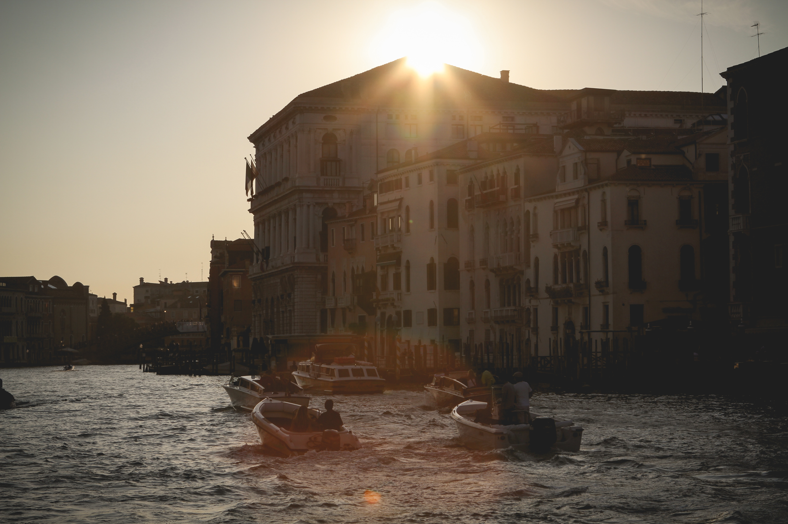

Top Attractions
Tours, Sightseeing and Things to do.

Top Tours
First time in Venice? You'll see all the highlights of this magical city in our combined walking and boat tour.

Book Online and save 20%.
Plus, you'll skip the long queues at St. Mark's Basilica - don't waste time standing in line when you're on holiday! Trusted English Speaking Guides will guide yu around the magnificent city.